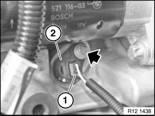

Crankshaft Position Sensor: Service and Repair
12 14 521 Replacing Crankshaft Pulse Generator (N52, N52K, N51, N53)

IMPORTANT: Read and comply with notes on protection against electrostatic discharge (ESD protection).

IMPORTANT:
Aluminium magnesium materials.
No steel screws/bolts may be used due to the threat of electrochemical corrosion.
A magnesium crankcase requires aluminium screws/bolts exclusively.
Aluminium screws/bolts must be replaced each time they are released.
Aluminium screws/bolts are permitted with and without colour coding (blue).
For reliable identification:
Aluminium screws/bolts are not magnetic.
Jointing torque and angle of rotation must be observed without fail (risk of damage).

Necessary preliminary tasks:
- Read out fault memory of DME control unit
- Turn off ignition
NOTE:
Installation location of pulse generator for crankshaft is underneath starter motor.
Preparatory tasks:
- Remove intake plenum

Detach plug (1) from crankshaft pulse generator (2).
Release screw.
Installation:
Replace aluminium screws.
Tightening torque 12 14 2AZ.
Withdraw pulse generator (2) from crankcase.
Installation:
Replace sealing ring.

NOTE:
Check stored fault messages.
Delete fault memory.